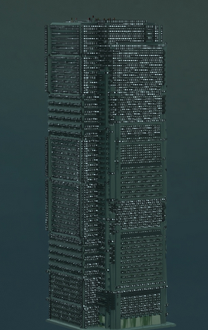

Graphics Gallery 2014
Hi! My name is Kyle Cheng and I am currently a senior Computer Science major at Williams college looking for a job starting May 2016.
This website showcases the work I did fall 2014 in Computational Graphics under Morgan McGuire - my first class in the field. All of the below work was created with code.
Contact: kylcheng@gmail.com
CyberPunk
I worked as the leader of a 9 person team that procedurally generated cyberpunk cities. Our work was inspired by Peter Wonka's procedural building generation. Every building was generated using our python scripts. The large city layout was achieved by using Voronoi diagrams to place the buildings.
I was responsible for the art style and for generating the buildings that you can see below. A context aware grammar constructs buildings by stacking rectangular boxes. We spent a total of two and a half weeks on this project.
Example of the three building styles:
Example of scalability:
For more details check out the powerpoint or the project report and journal documentation
Nuagic
I worked solo for four weeks on this project. I taught myself about Unity and the fundamentals of multiplayer synchronization and later used my new knowledge to tackle synchronization problems that were unique to my game. I was inspired by the art style of "Limbo" and made extensive use of Photoshop and particle systems to get a similar style in my game.
The bulk of my time was spent on getting multiplayer synchronization to work. Network messages are expensive and all messages are ~100ms old due to internet speeds, so basic game objects such as projectiles need special consideration. In my game, all projectile positions are a function of time and each client has different views of projectiles to compensate for the ~100ms delay to send messages over the internet.
For more details check out the powerpoint or the very detailed project report and journal documentation . Lastly, check out the gameplay trailer below:
CY-DEF
CyDef is a tower defense meets Minecraft game. We were a team of two and created this game from scratch in C++ over the course of two weeks. Our 3D grid system made our game conducive to ai which were programmed to run limited BFS or make context aware movement/attack choices. The Tron-like art style was achieved by implementing the Sobel filter in GLSL.
For more details check out the project report and journal documentation
Atomic
Atomic was rendered in the GPU using implicit surface equations. I was inspired by the infinite city in the short film Timeless . I experimented extensively with mod operations on the cast ray to generate a city that was infinite but not too uniform. The central explosion effect was achieved by blending the city's color and geometry with an expanding sphere. I spent a week on this project.
For more details check out the project report and journal documentation
Raytracers
The above video was created using a custom raytracer made in a group of three.
The below images were created by our recursive raytracer. The water was created by a random art generator program I made in a previous class that I converted from ML into C++. I modified the program so that it would create random art over time. The end result was water like ripples for certain random art functions.
For more details check out the project report and journal documentation for raytracing and the project report and journal documentation for recursive raytracing
Spirals
My first foray into graphics. We were told to create a scene using cubes by creating a G3D scene file. I was particularly inspired by the abstract short films such as Phase by Yasuhiro Kobari. To create the spirals, I made a script that generated G3D scene files. I spent a week on this project.
For more details check out the project report and journal documentation